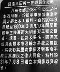

呂清夫 撰文
 古人說︰「勸君不用鐫頑石，路上行人口似碑。」城鄉之中每一尊銅像的背後應該都有一段動人的故事，一個城鄉越多這種銅像，便可能越加的動人。至於故事的本身在開始時，可能都有一定的口碑，後來才逐漸演化出銅像或紀念碑。
古人說︰「勸君不用鐫頑石，路上行人口似碑。」城鄉之中每一尊銅像的背後應該都有一段動人的故事，一個城鄉越多這種銅像，便可能越加的動人。至於故事的本身在開始時，可能都有一定的口碑，後來才逐漸演化出銅像或紀念碑。
在烏山頭水庫，有一尊不甚起眼的銅像，基座刻著「嘉南大圳設計者八田與一像」，其中以主觀寫實的守法，作成一件本土的沈思者像。自然，這是日據時代的東西，不過只要是對斯土斯民有貢獻的人物，其受注意應該是超越國界的。據悉台灣一百年前的嘉南一帶還是類似沙漠地帶，後來幸虧八田與一這個水利官員，出來仗量、籌建水庫，那一帶才開始有了綠地，有了農田。這位日本官員學土木出身，雖然位階不高，但有工作狂，每天早出晚歸，摩頂放踵，跑遍台灣南北。在三十多歲已經仗量完了台灣的八、九個水庫，據現代史學者高淑媛的考證，至少像「烏山頭水庫､嘉南大圳､日月潭水力發電工程，都是在他的主導經營下建設完成」。其後在太平洋戰爭期間，曾被派往菲律賓規劃水利工程，不料所乘的貨輪竟於途中被美軍潛艇炸沈，惡耗傳來，他的愛妻（夫妻原來住在台南六甲）外代樹並未立即束裝離台，反而一直守在八田生前最愛的烏山頭水庫及銅像之旁，等到戰爭結束，她竟跳入水庫的出水口自殺，哀婉至極，令人動容！嘉南農田水利會一直為這尊銅像樹立一個中英對照的看板，上面說他︰「自一九二○年九月起至一九三○年三月凡十年間，歷盡艱辛主持嘉南大圳灌溉工程之勘查､規劃､設計及監造，圓滿完成烏山頭水庫及輸水系統之建設，為表彰其豐功偉績及對嘉南平原百萬農民之偉大貢獻，特於一九三一年七月八日建立本銅像以資紀念。」而這個水庫造福的農田廣達十五萬公頃，至於八田在海上遇難的五月八日則被定為「水路開放日」。八田的遺愛台灣尚不止於此，他在興建嘉南大圳的時候，深深感到台灣土木人才的不足，及土木人才本土化的必要。當時台灣雖然已經有台北工業學校（台北科大前身）､台南高等工業學校（成大前身）等校的設立，但學生以日本人為主，本土人才培育無門。八田於是想出一個辦法，亦即乾脆創辦一所「私立土木測量學院」，當時結合了總督府退休的土木官員､及本地的仕紳共襄盛舉，專門訓練本土人才。校址先後設在今天的台北善導寺､成淵中學､及三重埔憲兵學校一帶。如是從三○年代起至終戰左右，總共培育了本省土木人才約一千三百人，畢業生半數以上都出任當時的公職，這在殖民社會中可以說相當不容易。戰後日本人退出台灣時曾語出驚人地說，日本人離開台灣不出半個月，工廠將全部停工，火車亦行不得也，事實上呢？前述高氏則說︰「日本人的豪語並未成為事實，我想，土木測量學院多年培養出來的技術員，在這個青黃不接的時期，應該扮演極重要的角色。」筆者並非學歷史，但是由於每個銅像､紀念碑都是歷史的結晶，故對歷史學者的客觀資料十分關心。不少學者都說，八田「至今仍被他的學生､故交､舊屬稱道為比台灣人還愛台灣的日本人」，想來這種口碑應非溢美之詞。